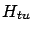
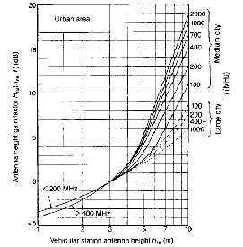

Siguiente: Modelo de Okumura-Hata
Subir: Modelo de Okumura-Hata
Anterior: Modelo de Okumura-Hata
Índice General
Okumura et al. [14] desarrollaron en 1968 un
método para predecir el valor mediano de la pérdida de camino en
base a una serie de medidas en y alrededor de la ciudad de Tokio.
Aunque fue de los primeros trabajos en tratar la propagación en
entornos urbanos y proponer un modelo para predecir la pérdida de
camino, hasta el día de hoy continúa siendo uno de los modelos más
usados (en su versión analítica y mejorada, que se verá más
adelante) por su sencillez, razonable precisión y versatilidad.
El método consiste en hallar la pérdida de camino (relativa a la
atenuación en vacío) mediante curvas creadas por los autores. Está
conformado por varios términos, donde el que podría denominarse
``principal'' depende de la distancia entre el móvil y la radiobase
y de la frecuencia de transmisión (
 , ver figura
5.1). Ésta es la pérdida relativa al vacío para
entornos urbanos sobre terrenos suavemente ondulados con altura
efectiva de 200 m y 3 m de antena trasmisora y receptora
respectivamente; para el probable caso en que las condiciones
mencionadas no se cumplan existen factores correctivos.
, ver figura
5.1). Ésta es la pérdida relativa al vacío para
entornos urbanos sobre terrenos suavemente ondulados con altura
efectiva de 200 m y 3 m de antena trasmisora y receptora
respectivamente; para el probable caso en que las condiciones
mencionadas no se cumplan existen factores correctivos.
Figura 5.1:
Representación gráfica de la mediana de la pérdida de
camino en función de la frecuencia y la distancia según el método de
Okumura
|
|
Por ejemplo, de las curvas que se pueden apreciar en la figura 5.2 se
pueden obtener correcciones al valor de la pérdida de camino debidas
a otras alturas de transmisor y receptor ( y ).
La pérdida de camino resulta:
donde es la atenuación por la propagación en vacío vista en
la sección 3.1.
Figura 5.2:
Correcciones para altura del transmisor y receptor según el
método de Okumura
|

|
Éstas no son las únicas correcciones disponibles. Existen también
factores correctivos que toman en cuenta el entorno (urbano,
suburbano y rural), la regularidad del terreno y la orientación de las
calles, todos en forma gráfica.
El modelo tiene algunos problemas no menores. Es casi puramente
gráfico, lo que lo hace muy difícil de implementar en software. En
el momento en que se desarrolló se tenían en mente únicamente
macroceldas donde la antena transmisora estuviera por encima de las
edificaciones circundantes, dando resultados erróneos en caso
contrario. Hoy en día, con el uso muy frecuente de micro y
picoceldas el modelo se vuelve en esos casos inaplicable. Otro
factor a tener en cuenta es que, dado que las medidas se tomaron en
Tokio, la correlación entre las medidas reales y la predicción es
muy dependiente de que el entorno sea similar al de dicha ciudad. El
método no especifica qué hacer cuando algún parámetro queda por
fuera del dominio de las funciones que aparecen en las gráficas, se
puede extrapolar pero no se asegura que eso sea lo más correcto.
También algunas definiciones pueden devolver valores inutilizables
(por ejemplo, si la antena trasmisora es más baja que el terreno
circundante su altura efectiva tal cual la define Okumura resultaría
negativa).
Siguiente: Modelo de Okumura-Hata
Subir: Modelo de Okumura-Hata
Anterior: Modelo de Okumura-Hata
Índice General
SAPO